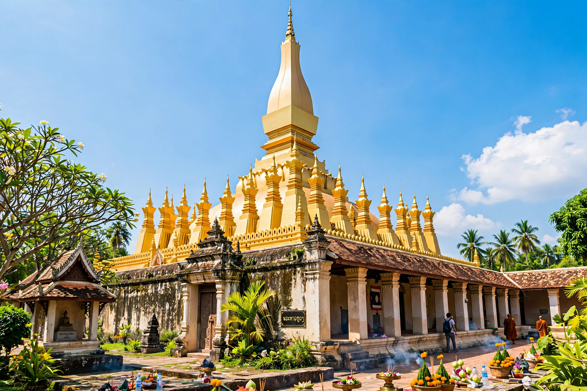

[Image placeholder: Pha That Luang, the golden stupa that symbolises Laos]| Country | Laos |
|---|---|
| Population | About 950,000 (city area estimates) |
| River | Mekong, opposite Thailand |
| Landmark | Pha That Luang (national symbol) |
**Vientiane** is the capital and largest city of Laos, on a bend of the Mekong River facing Thailand across the First Thai–Lao Friendship Bridge (1994). Often described as Southeast Asia's sleepiest capital — a low-rise town of temples, French colonial villas and frangipani trees — it has grown quickly since the 2000s with Chinese and Vietnamese investment.
Vientiane became a Lao capital under King Setthathirath in 1563, who built its emblem, the golden stupa Pha That Luang, and moved the Emerald Buddha to Wat Phra Kaew (it was later seized by Siam and now sits in Bangkok). The French made it their protectorate capital; the Pathet Lao victory in 1975 emptied it of much of its population before gradual reopening. The Patuxai victory arch — built with US-donated cement intended for an airport, wryly called the 'vertical runway' — dominates its main avenue.
Wat Si Saket (1818, with thousands of Buddha niches), the morning market, the riverside night market, and the COPE centre documenting the UXO legacy of the Vietnam War-era bombing of Laos are key stops.